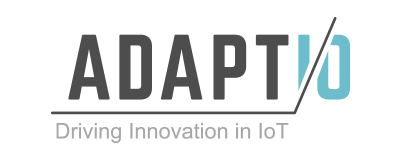

Mi Educación
Seminario: Cercos virtuales. Universidad Nacional de San Luis.
Seminario UNSL-INTA sobre capacitación en cercos virtuales. Los cercos virtuales usan la tecnología BLE para generar un límite virtual en las tierras destinadas al pastoreo. Dicho límite virtual es detectado por dispositivos collares, que se colocan en cada uno de los animales. Estos collares, están destinados a detectar la proximidad de la misma con la valla virtual y emitir una alerta para el animal.
Una de las ventajas más importantes del sistema es la reconfiguración dinámica de las áreas delimitadas, en cuestión de minutos. Además, no se necesita infraestructura previa en el campo. Además, al ser el protocolo BLE, los dispositivos consumen muy poca energía.
Universidad Nacional de Córdoba. Curso de posgrado en Procesos Estocásticos.
Estudio teórico de los conceptos de Probabilidad y Estadística, aplicados a las telecomunicaciones. Desarrollos de algoritmos en MATLAB y Python como parte del contenido práctico del curso.
Universidad Nacional de Córdoba. Curso de posgrado Procesamiento de Señales en Tiempo Discreto.
Curso de Posgrado en Procesamiento de Señales en Tiempo Discreto. Análisis teórico y práctico gracias al desarrollo de algoritmos DSP en MATLAB y Python.
Universidad Nacional de San Luis. Ingeniero Electrónico con orientacion en sistemas digitales.
Abanderado de la carrera de Ingeniería Electrónica con Orientación en Sistemas Digitales en la UNSL, promedio 8.93. Tesis: "Sistema de parcelas virtuales, aplicado a la ganadería".
Mi Experiencia

AdaptIO. Lead Engineer & Co-Founder.
Ago. de 2018 – actualidad
- Diseño y desarrollo de dispositivos de IoT (tecnología LoRaWAN, WiFi, BLE, etc): Firmware y hardware.
- Diseño de PCBs de nodos IoT.
- Machine Learning con Python y TensorFlow.
Keys:
Python, numpy, matplotlib, Python notebooks, C/C++, LaTex, Multisim, KiCad, EAGLE, Arduino IDE, MBED, MPLAB IDE, BLE, LoRaWAN, Jupyter, pandas, seaborn, scipy, PIL, Machine Learning, TensorFlow, tflearn, R.
Taller Technologies. Ingeniero de Software.
Ene. de 2018 – actualidad Duración del empleo 5 meses
- Diseño y desarrollo de dispositivos de IoT (tecnología LoRaWAN, WiFi, BLE, etc): Firmware y hardware.
- Diseño de PCBs de nodos IoT.
- Incursionando en Machine Learning con Python y TensorFlow.
Keys:
Python, numpy, matplotlib, Python notebooks, C/C++, LaTex, Multisim, KiCad, EAGLE, Arduino IDE, MBED, MPLAB IDE, BLE, LoRaWAN, Jupyter, pandas, seaborn, scipy, PIL, Machine Learning, TensorFlow, tflearn, R.
Inphi Corporation. Ingeniero electrónico.
Dic. de 2016 – sept. de 2017 Duración del empleo 10 meses
Desarrollo, evaluación, implementación y verificación de algoritmos DSP para transceptores ópticos coherentes de alto rendimiento, utilizando modulaciones BPSK a QAM16, para aplicaciones de metro, larga distancia y submarinos.
Keys:
Matlab, LaTex, C/C++, Python, Python Notebook, numpy, matplotlib.
Clariphy Argentina S.A. Ingeniero electrónico.
May. de 2016 – dic. de 2016 Duración del empleo 8 meses
Desarrollo, evaluación, implementación y verificación de algoritmos DSP para transceptores ópticos coherentes de alto rendimiento, utilizando modulaciones BPSK a QAM16, para aplicaciones de metro, larga distancia y submarinos.
Keys:
Matlab, LaTex, C/C++, Python, Python Notebook, numpy, matplotlib.
Dockta. Ingeniero electrónico.
Ene. de 2016 – sept. de 2016 Duración del empleo 9 meses
Instalación y puesta en marcha de impresoras 3D, diseño y montaje de PCB de baja y mediana complejidad, desarrollo de soluciones IoT mediante la implementación de la tecnología iBeacon y WiFi. Co-creador del proyecto Mi3DP, que busca llevar la tecnología digital de impresión 3D a entornos escolares y de educación primaria.
Keys:
C/C++,, Multisim, KiCad, EAGLE, Arduino IDE, MPLAB IDE.
Entiractive. Ingeniero electrónico.
Jun. de 2015 – ene. de 2016 Duración del empleo 8 meses
Desarrollo de dispositivos para IoT, incluidos iBeacons para marketing de proximidad, estos dispositivos permiten enviar alertas sobre productos y/o servicios, cuando el usuario (con su teléfono celular) se acerca a dichos dispositivos BLE. Diseño y montaje de PCB de baja y mediana complejidad.
Keys:
C/C++, Multisim, KiCad, EAGLE, DipTrace, Arduino IDE, MBED, MPLAB IDE, BLE.